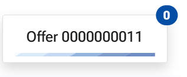
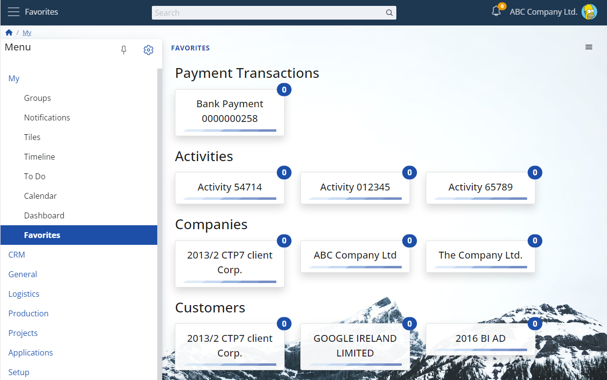
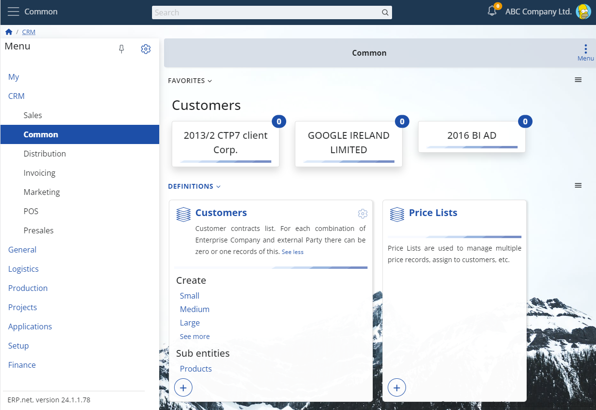
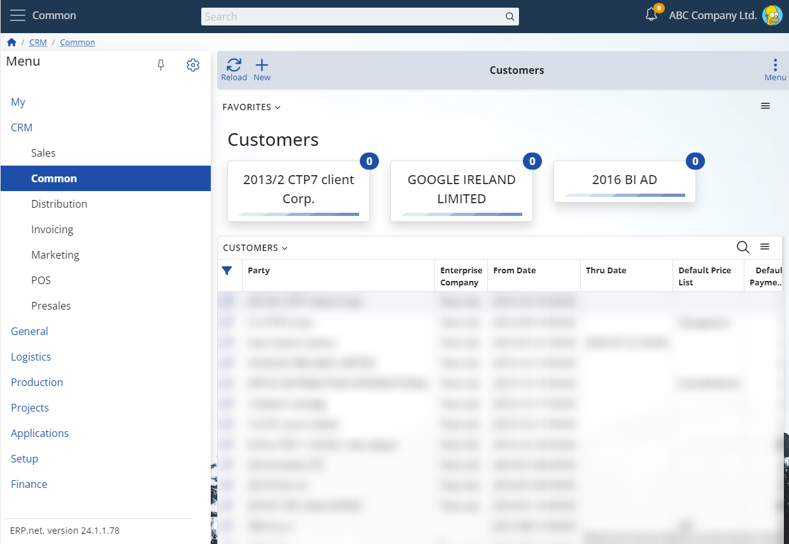

"My Favorites" provides a visual representation of all objects that you are following, also known as your favorite objects. Much like My Tiles, the main visual element here is the tile, although with some differences. The caption of the tile is the display text of the favorite object, and the badge displays the count of available new notifications.

Consequently, an example of the overall view of "My Favorites" looks like this:

The tiles are organized into groups based on the entities they belong to.
Additionally, clicking on a tile will open the form for the favorite object.
Note
Even if you have no notifications for a favorite object, its corresponding tile will still be displayed. The tile will disappear once you remove the object from your favorites.
My Favorites as a widget
Similar to most My Apps widgets, "My Favorites" supports the following properties:
- You can show the favorites widget in each form of your choice.
- Only the favorite objects (i.e., the tiles) related to the form's context will be shown.
Below, you can see example images illustrating the favorites widget on a menu page and within a navigator form.

